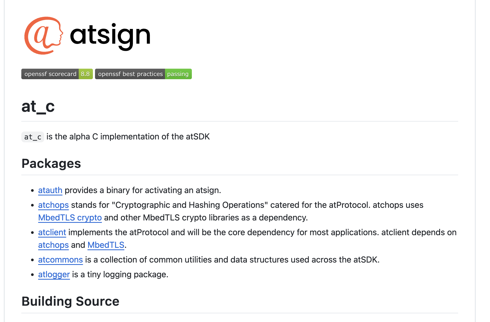
at_c
In-ProgressatProtocol implementation in C for ESP32 and Embedded Devices
at_c is the client implementation of the atProtocol. Similar to libraries needed for HTTP communication, the C SDK is required for embedded devices and C applications to interact with their atServer through the atProtocol. This SDK facilitates edge encryption, server authentication, and simplifies protocol interactions for users. Among the SDKs I contributed to, including at_java, at_pico_w, and at_esp32, at_c emerged as the most complete due to customer demand. By August 2024, we achieved the v0.1.0 beta release.
Cryptography Features:
- RSA 2048 encrypt/decrypt
- RSA 2048 sign/verify
- AES 256 CTR encrypt/decrypt
- AES key generation
- RSA 2048 key importing
- SHA 256 hashing
atProtocol Features:
- CRUD operations: Put, Get, Delete
- Events: Notify, Monitor
- AtKey: metadata, to/from string
- Authentication: PKAM authentication
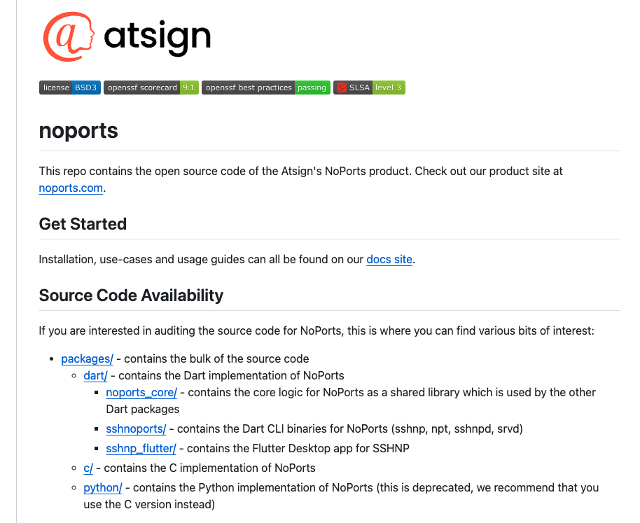
noports
In-ProgressEstablish TCP connections without opening ports
noports is a company-wide project designed to allow users to remotely access their machines without requiring open ports. It provides a secure and user-friendly solution, especially for non-tech-savvy users. The project is currently under development and not yet publicly available.
My Contribution:
-
Developed the
at_cC SDK, a core dependency for noports' C SSHNPD. - Created the initial set of end-to-end tests using Docker to simulate the noports handshake process. This involved closing ports on Docker machines and simulating one container SSH'ing into another.
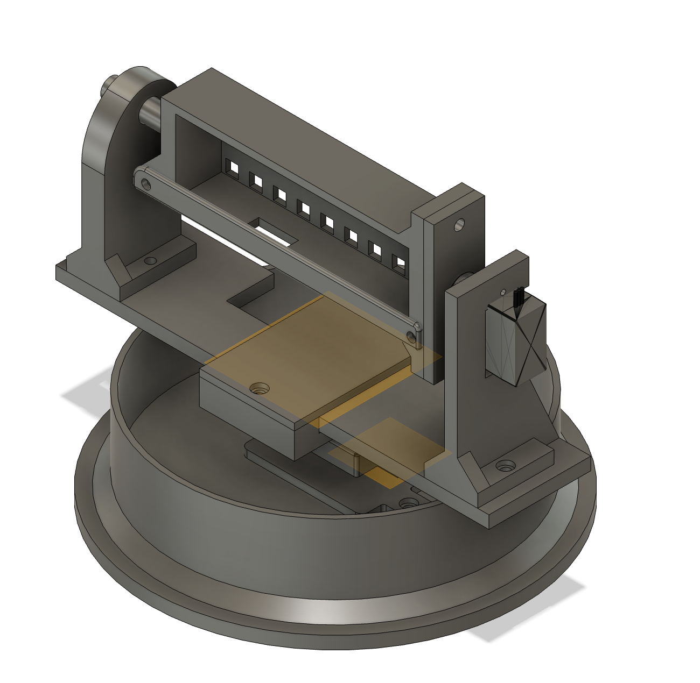
Face Tracking Robot
October 2024A 2-axis face tracking robot powered by Luxonis Oak-D Lite
This project features a 2-axis (yaw/pitch) face tracking robot powered by a Luxonis Oak-D Lite camera and two micro servo motors. The system utilizes Python, Flask, DepthAI, OpenCV, and a Raspberry Pi for real-time face tracking and control.
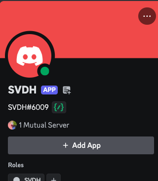
Meal Plan Discord Bot
October 2024South Village Dining Hall Menu Bot
This bot fetches daily menus from the South Village Dining Hall API and outputs them in a Discord bot, providing users with up-to-date meal information.
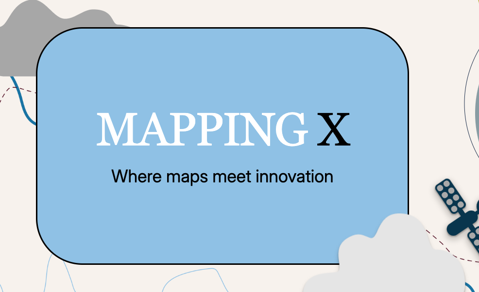
MappingX
October 20241st place at NASA Space Apps 2024
Mapping X is a web-based interactive Geographical Information System (GIS) tool that lets you generate .STL meshes from Digital Elevation Model (DEM) data and Surface Water and Ocean Topography (SWOT) data from open-source NASA Earthview data. Built using Python, React, and Linux.
GitHub repository. 5 min YouTube video. 30 second YouTube video.
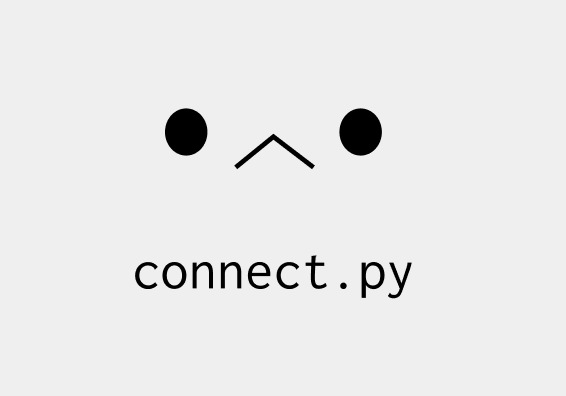
connect.py
September 2024Hack The North 2024
connect.py is a solution for secure remote access to a Jetson Nano in an air-gapped environment without requiring open ports. This project leverages Docker and Linux to ensure a secure and reliable implementation.
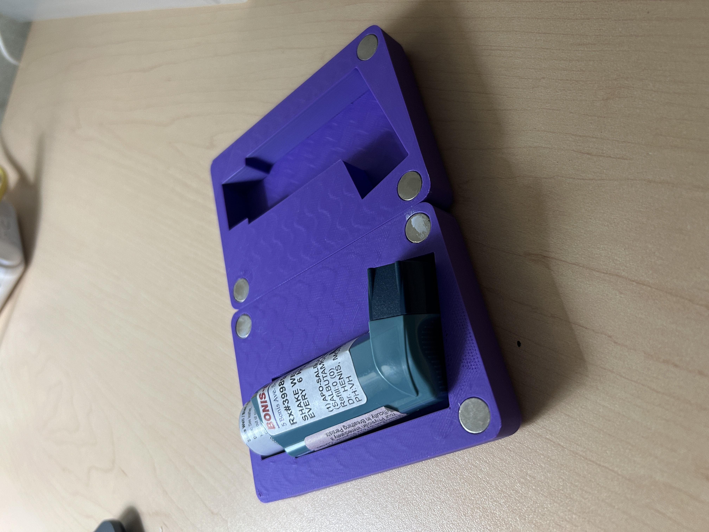
Custom Inhaler Case
September 2024A custom 3D printed case for my asthma inhaler
I designed and printed my own case for my asthma inhaler using Fusion 360. The case was fully custom-designed and utilizes 6x2mm magnets to securely hold the case together. The top comes off and snaps back on with magnets for satisfying ease of use.
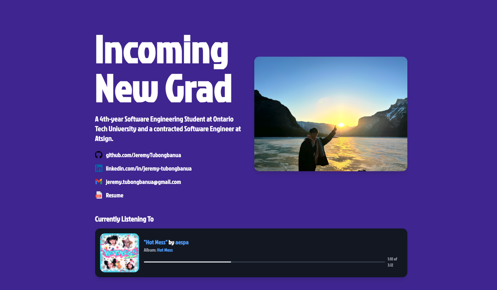
jeremymark.ca
September 2024Old portfolio page
jeremymark.ca is my old personal portfolio website. Unfortunately, I lost the domain. It had cool features like showing what song I was listening to on Spotify.
Technologies Used:
- Web Application: React, Tailwind CSS, Vite
- Backend: Node.js/Express with Spotify API integration
- Containerization: Docker, Docker Compose
- Web Server: Nginx with HTTPS (Let's Encrypt)
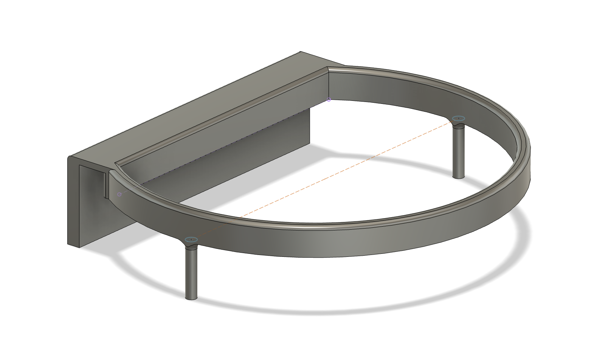
Simple Garbage Holder
August 2024A simple model to hold small garbage plastic bags
This is a custom garbage holder designed to fit between the gaps of kitchen cabinets, making it more convenient for my mom to dispose of garbage without bending down. The holder was 3D printed in PLA and designed in Fusion360.
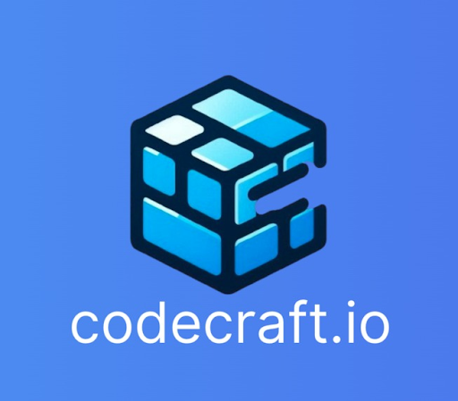
codecraft.io
August 2024Ignition Hacks 2024
AI-assisted coding learning platform built using React, Node.js Express, and Docker.
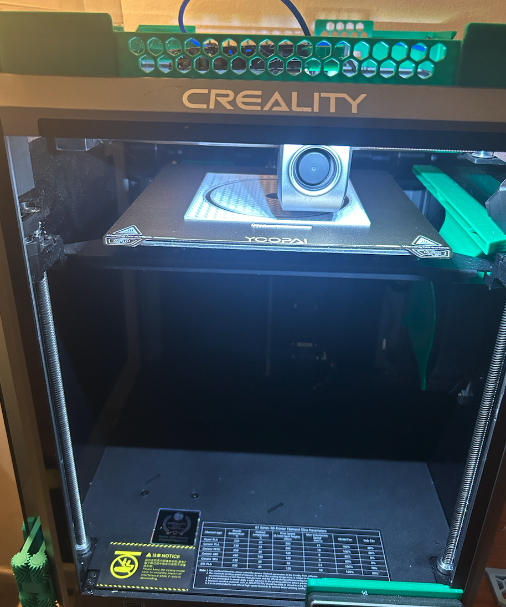
Creality K1 Mods
July 202418 mods for my Creality K1 3D printer
I created and personally use 18 mods for my Creality K1 3D printer. These mods enhance functionality, improve usability, and include both custom-made designs and downloads from Printables. Mods range from chain risers and exhaust filters to lid risers and filament guides.
Weekly Wardrobe
May 2024HawkHacks 2024
Weekly Wardrobe is a web application platform that allows users to subscribe to a "try on clothing temporarily" service. They will receive used clothing for them to try on, then they will rate the week's clothing. The algorithm will slowly adapt their style and preferences to the clothing they receive. Project was built using React, Node.js Express, Blockchain, and Linux.
SuperCoolFlights
April 2024SOFE 3980U Final
Flight booking web application built using React, Tailwind CSS, Node.js Express, and Linux.
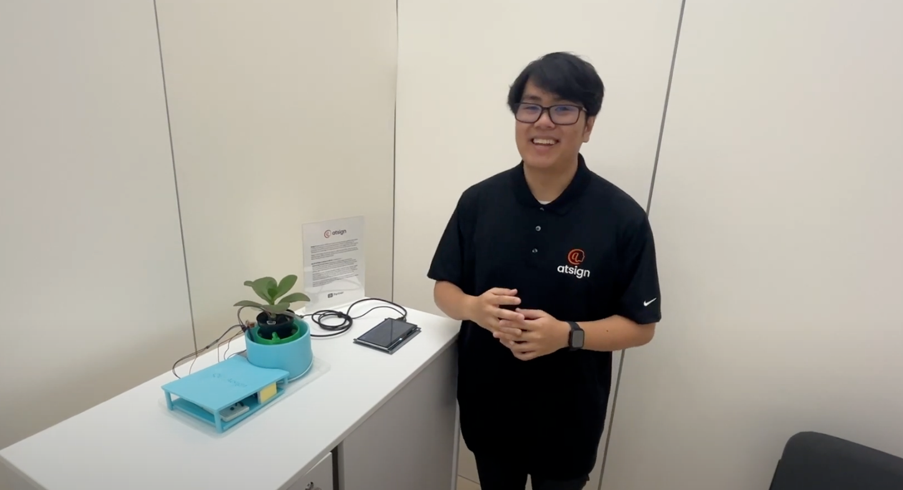
Qt/Atsign Plant
January 2024CES 2024 Booth Demo
This was a joint demo with the Qt Company showcased at CES 2024 in Las Vegas. I was flown by Atsign to set up the demo at Qt's booth, where I presented it to attendees and executives. The demo featured a secure IoT plant monitoring system using atProtocol and Qt.
Qt Application: A Python Qt QML application ran on a Raspberry Pi with a screen, providing a simple UI to control and monitor the plant securely using atSign's encrypted control plane.
Atsign Plant: The plant setup included a custom-designed PLA pot, a 5V DC water pump, soil moisture and water level sensors, and other electrical components like relays. The software, written in Python using the at_python SDK, enabled secure communication between the Raspberry Pi and the Qt application.
Source Code GitHub. Atsign LinkedIn Post. Video Demo at CES 2024.
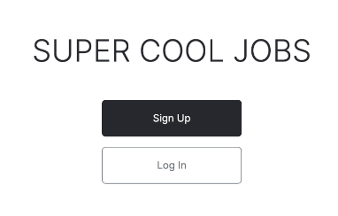
SuperCoolJobs
November 2023SOFE 3700U Final
Job recruitment web application built using React, Tailwind CSS, Node.js Express, Linux, Docker, and MySQL.
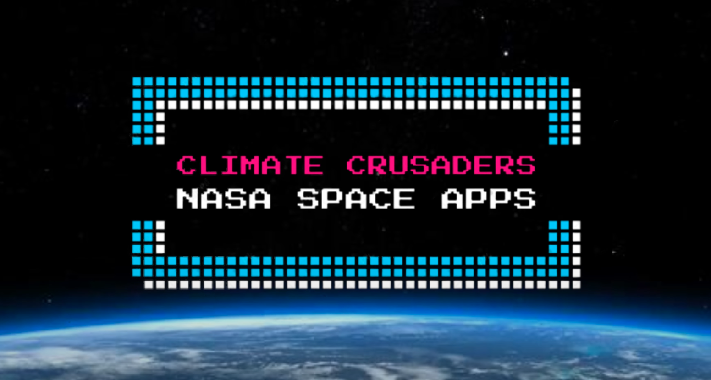
Climate Crusaders
October 20233rd Place at NASA Space Apps 2023
The goal of Climate Crusaders is to raise awareness about rising sea water levels using Global Mean Sea Level data from open-source NASA data, built using Python and PyGame.
GitHub - JeremyTubongbanua/nasa-space-apps-2023. Space Apps Challenge - Team Wesley. YouTube - Project Demo.
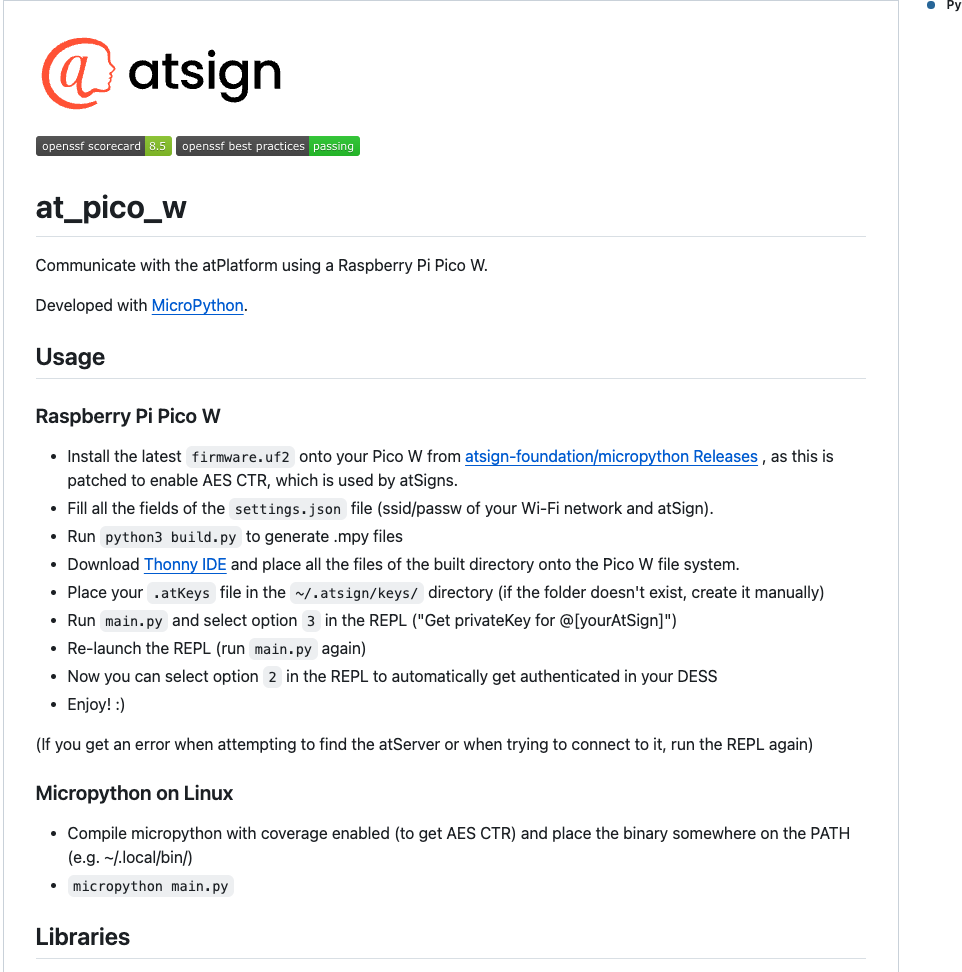
at_pico_w
June 2023atProtocol implementation in Micropython for Raspberry Pi Pico W
at_pico_w is the client implementation of the atProtocol written in Micropython for the Raspberry Pi Pico. It enables secure communication and supports edge encryption for IoT applications.
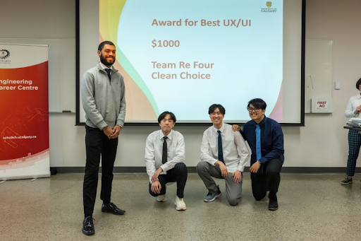
CleanChoice
April 20232nd Place and Best UI/UX Award
CleanChoice won 2nd place ($2k prize) and Best UI/UX ($1k prize). CleanChoice was a project submitted to Schulich Hacks 2023, where my team and I were flown to the University of Calgary for a weekend to create a project to help the environment. CleanChoice generates a QR code on your receipt and scans the environmental impact of the products you've purchased.
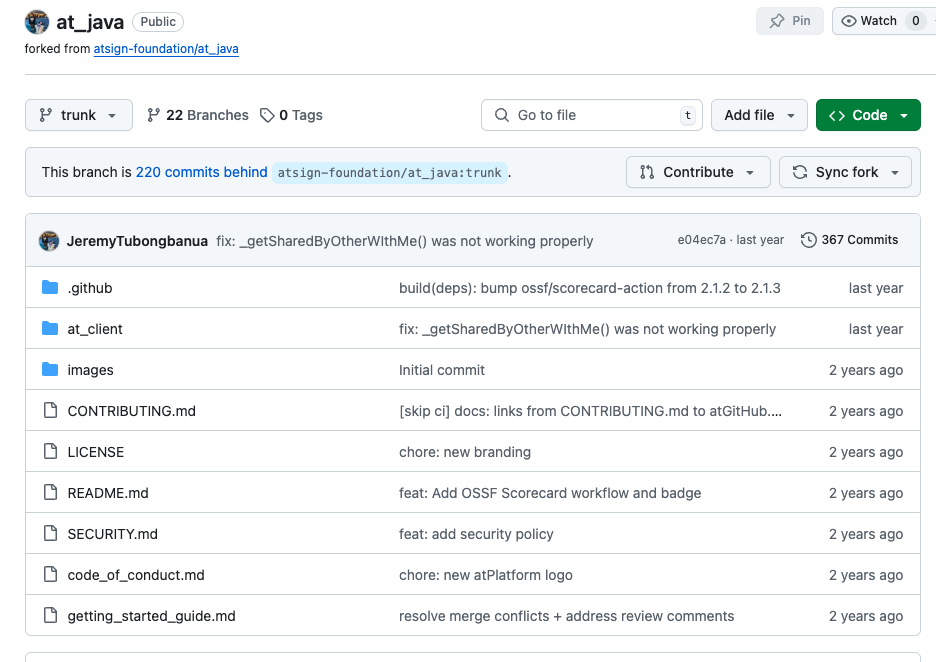
at_java
April 2023atProtocol implementation in Java
at_java is the client implementation of the atProtocol written in Java. During my internship at Atsign in 2022, I had the opportunity to implement key features such as CRAM and AtKey to/from string functions. I also implemented continuous deployment of publishing the Java SDK to Sonatype Nexus Repository.
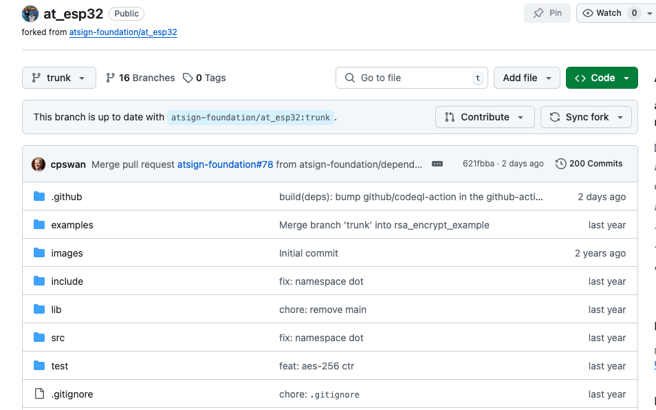
at_esp32
April 2023atProtocol implementation in C++ for ESP32 Arduino
The at_esp32 SDK enables ESP32 Arduino devices to communicate with their atServers using edge encryption. I implemented various low-level cryptographic functions required by the atProtocol, such as RSA 2048 encrypt/decrypt, AES 256 CTR encrypt/decrypt, and AtClient operations like put, get, delete, and PKAM authentication.
UMass Boston Winter 2022: This SDK was developed to support UMass Boston students in their final CS project, which involved creating an actuator/sensor ESP32 demo using the atPlatform. I conducted workshops, held office hours, and created a video tutorial playlist to guide students in using the SDK successfully.
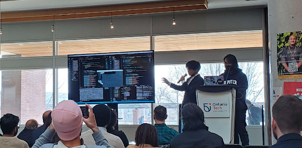
Split
March 2023Demo Fest 2023
Using atSigns and the at_java Java SDK, we implemented a Distributed Systems application that splits images into partitions and sends them to different servers securely. The images were processed and returned to the root, fully encrypted, and grey scaled.
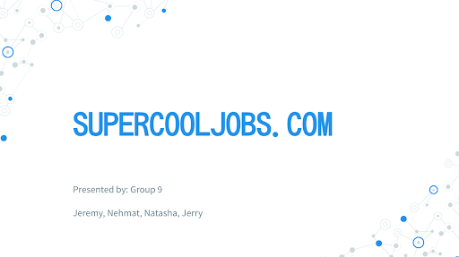
SuperCoolJobs
December 2022SOFE 2800U Final
This was our submission to the SOFE 2800U final project. SuperCoolJobs is a simple job recruitment website written in React with a MongoDB backend.
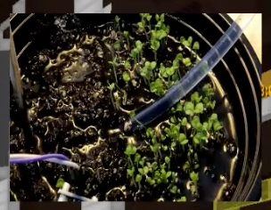
Bailey x Twitch
September 2022IoT plant that is watered by Twitch chat
This is an IoT plant connected to a Raspberry Pi Zero. A web server is run on the Raspberry Pi to serve as an API for the Twitch chatbot to interact with the plant. Twitch viewers can trigger the 5V DC water pump to water the plant by following, subscribing, or running a specific command.
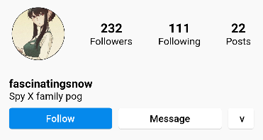
Instagram Clone
May 2022Visual clone of the Instagram app
A basic visual clone of Instagram using Flutter/Dart. This was a small side project to test my front-end skills with Flutter/Dart.
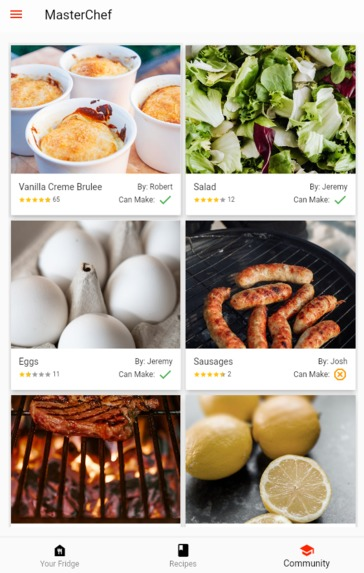
MasterChef
February 2022UofT Hacks IX
MasterChef is a web application that allows users to search for recipes based on the ingredients they have. Built using Flutter/Dart with a Firebase backend, this project was created as a sample submission for UofT Hacks IX.
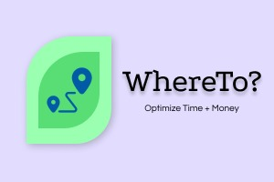
WhereTo?
February 2022CalgaryHacks 2022
WhereTo? is a React Native app and Figma mockup designed to help users optimize time and money when commuting to their destination.
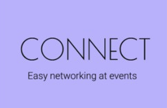
Connect
October 2021Cal Hacks 8.0
Connect is a Figma mockup representing an app designed to help people connect with each other at events.
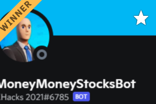
MoneyMoneyStocksBot
August 2021Best Veteran Hack at XHacks2021
This is a Discord bot that provides real-time stock data. It was submitted to XHacks 2021 and won Best Veteran Hack.
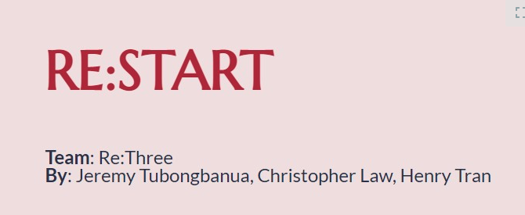
Re:Start
May 2021RU Hacks 2021
Re:Start is a simple React Native app and Figma mockup that helps optimize your sleep by waking you up at the end of a sleep cycle.
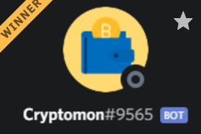
Cryptomon
May 20211st Place Winner at University of Washington Blockchain Hackathon 2021
Cryptomon is a Discord bot that gamifies cryptocurrency trading to educate players about how cryptocurrency works. Written in Node.js, it was hosted on repl.it during the judging period of the hackathon. This project won 1st place at UW Blockchain Hackathon 2021 out of 71 participants.
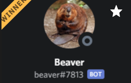
BeaverBot
February 20212nd Place at CalHacks2021
This was my first hackathon project with my friends Chris and Henry. We created a Discord bot to connect new university students, inspired by our own experiences as new students. Written in JavaScript, it used FaunaDB as the backend database.
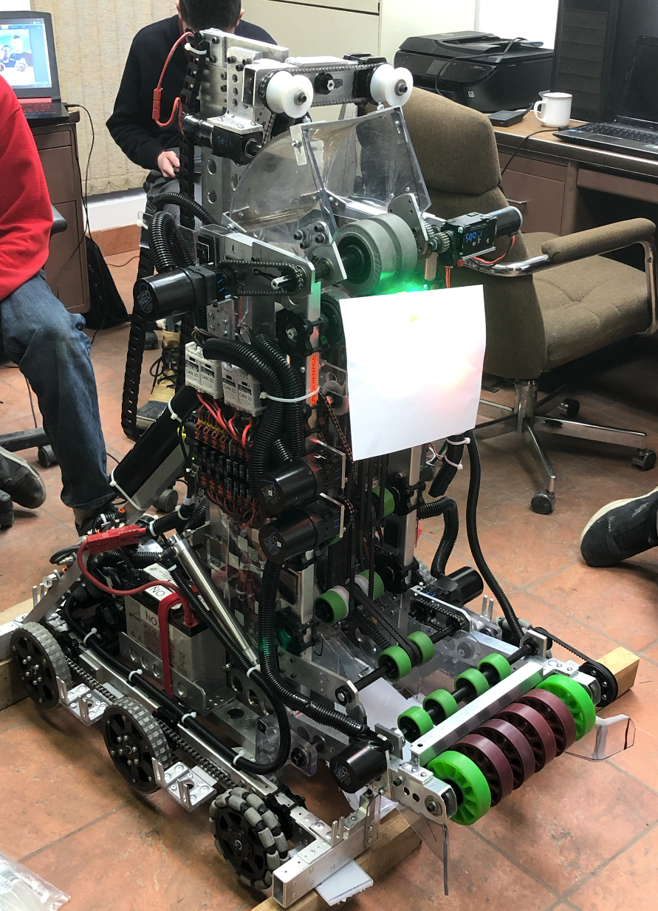
FRC 2020 Robot
June 20206 Ball Autonomous
This was my last year of high school, where I served as the lead programmer for FRC 5596. I implemented many autonomous features, including vision processing with Limelight, motion profiling, and PID control. Unfortunately, the robot never competed due to COVID-19, but it was deemed very competitive thanks to our 6 ball autonomous.
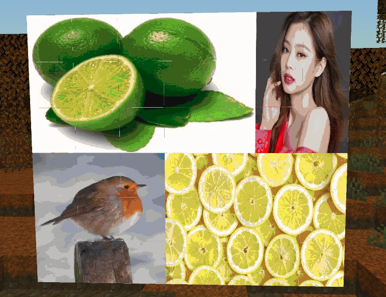
MapImg
November 2019Converts images to map items
This Spigot Minecraft plugin takes an image (via URL) and converts it into a grid of maps that are delivered to your inventory. It is useful for displaying large-scale images on your server.
GitHub Source Code. SpigotMC Plugin. Plugin Statistics (353 downloads).
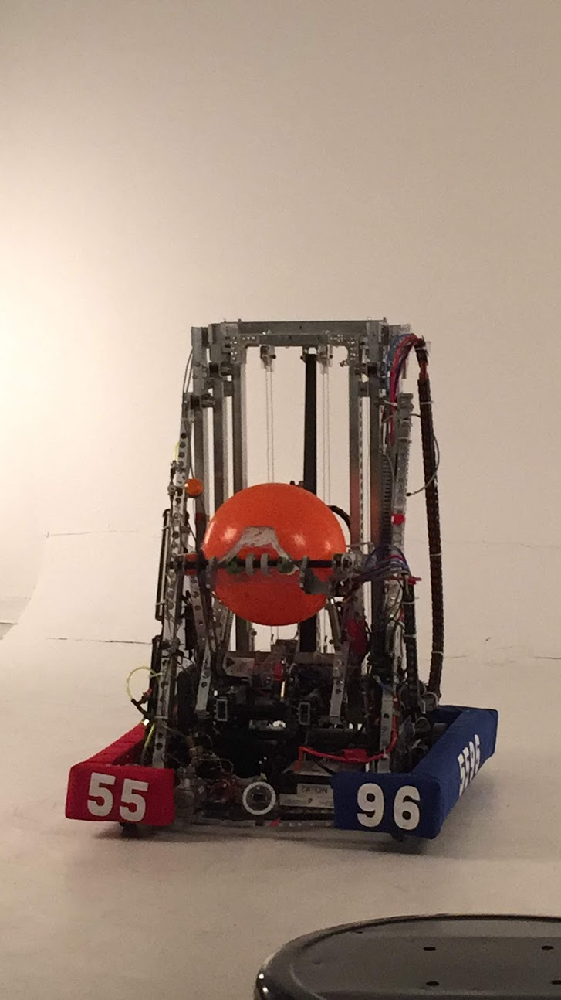
FRC 2019 Robot
June 20192019 Robot for FIRST Robotics
The 2019 FRC robot for team 5596. As a first-year programmer on the team, I implemented various features, including basic manual actuator controllers, autonomous routines, and some vision processing using OpenCV.
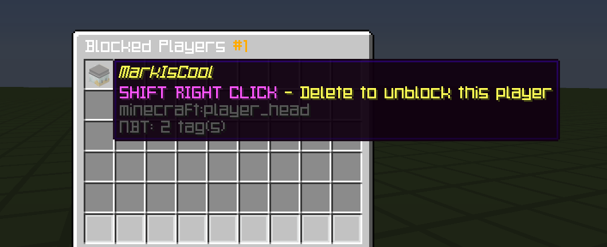
MailBox
May 2019Spigot plugin that got 1 donation
MailBox is a Spigot plugin that allows players to send messages to a "mailbox" for offline players. The mailbox stores messages until the recipient logs in to read them. This project led to my first $10 USD donation and a custom version commissioned for a customer, which was delivered as a private `.jar`.
{kind=link}
{kind=link}
{kind=link}
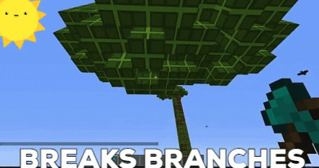
Timber
April 20192.6k+ Downloads
Timber is a simple Spigot plugin that uses recursion to break down trees in Minecraft. By breaking the root of the tree, the entire tree would be broken down automatically.
GitHub Source Code. SpigotMC Plugin.
Achievements:
- 2.6k+ downloads
- Peak 15 servers using the plugin
- Average 7 servers using the plugin